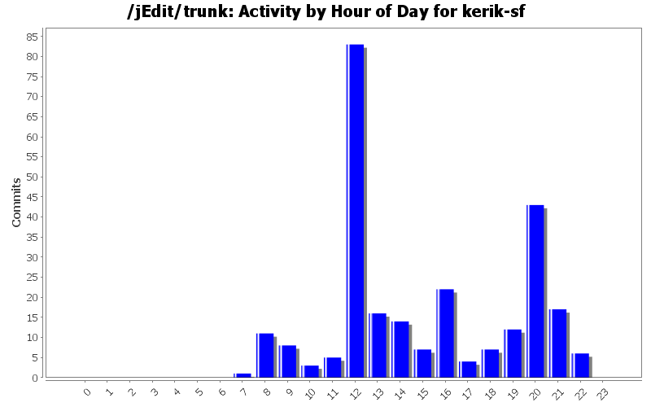
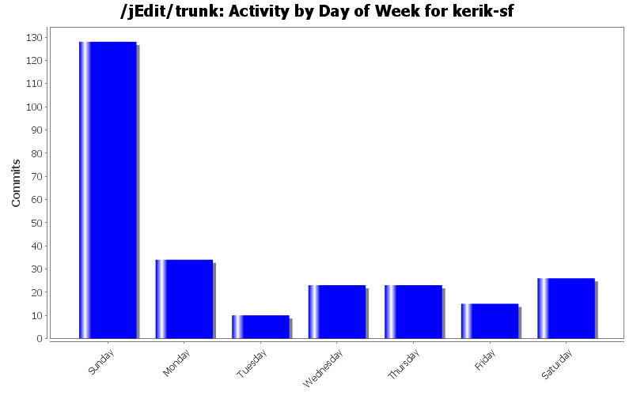
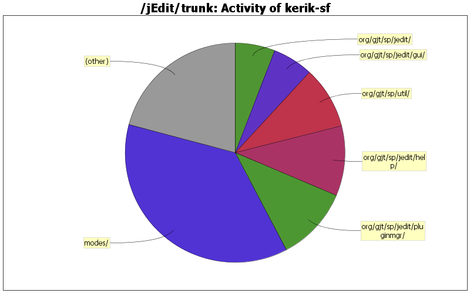

| Directory | Changes | Lines of Code | Lines per Change |
|---|---|---|---|
| Totals | 259 (100.0%) | 5119 (100.0%) | 19.7 |
| modes/ | 18 (6.9%) | 1888 (36.9%) | 104.8 |
| org/gjt/sp/jedit/pluginmgr/ | 27 (10.4%) | 559 (10.9%) | 20.7 |
| org/gjt/sp/jedit/help/ | 12 (4.6%) | 530 (10.4%) | 44.1 |
| org/gjt/sp/util/ | 3 (1.2%) | 468 (9.1%) | 156.0 |
| org/gjt/sp/jedit/gui/ | 38 (14.7%) | 307 (6.0%) | 8.0 |
| org/gjt/sp/jedit/ | 26 (10.0%) | 300 (5.9%) | 11.5 |
| org/jedit/options/ | 3 (1.2%) | 203 (4.0%) | 67.6 |
| doc/ | 41 (15.8%) | 123 (2.4%) | 3.0 |
| misc/mode_lint/ | 1 (0.4%) | 106 (2.1%) | 106.0 |
| org/gjt/sp/jedit/syntax/ | 2 (0.8%) | 90 (1.8%) | 45.0 |
| org/gjt/sp/jedit/gui/statusbar/ | 2 (0.8%) | 88 (1.7%) | 44.0 |
| installer/ | 3 (1.2%) | 79 (1.5%) | 26.3 |
| org/gjt/sp/jedit/search/ | 8 (3.1%) | 36 (0.7%) | 4.5 |
| org/gjt/sp/jedit/print/ | 3 (1.2%) | 36 (0.7%) | 12.0 |
| org/gjt/sp/jedit/proto/jeditresource/ | 3 (1.2%) | 35 (0.7%) | 11.6 |
| org/gjt/sp/jedit/browser/ | 7 (2.7%) | 34 (0.7%) | 4.8 |
| org/gjt/sp/jedit/io/ | 4 (1.5%) | 33 (0.6%) | 8.2 |
| org/gjt/sp/jedit/options/ | 10 (3.9%) | 32 (0.6%) | 3.2 |
| org/gjt/sp/jedit/bsh/ | 1 (0.4%) | 27 (0.5%) | 27.0 |
| / | 5 (1.9%) | 25 (0.5%) | 5.0 |
| org/jedit/localization/ | 13 (5.0%) | 22 (0.4%) | 1.6 |
| org/gjt/sp/jedit/bufferio/ | 3 (1.2%) | 21 (0.4%) | 7.0 |
| macros/Properties/ | 6 (2.3%) | 19 (0.4%) | 3.1 |
| doc/users-guide/ | 3 (1.2%) | 16 (0.3%) | 5.3 |
| org/gjt/sp/jedit/textarea/ | 3 (1.2%) | 9 (0.2%) | 3.0 |
| org/gjt/sp/jedit/keymap/ | 1 (0.4%) | 8 (0.2%) | 8.0 |
| org/gjt/sp/jedit/menu/ | 2 (0.8%) | 5 (0.1%) | 2.5 |
| org/gjt/sp/jedit/indent/ | 3 (1.2%) | 5 (0.1%) | 1.6 |
| org/gjt/sp/jedit/bufferset/ | 1 (0.4%) | 5 (0.1%) | 5.0 |
| doc/FAQ/ | 2 (0.8%) | 5 (0.1%) | 2.5 |
| org/gjt/sp/jedit/gui/tray/ | 1 (0.4%) | 2 (0.0%) | 2.0 |
| macros/Text/ | 1 (0.4%) | 1 (0.0%) | 1.0 |
| macros/Java/ | 1 (0.4%) | 1 (0.0%) | 1.0 |
| macros/Files/ | 1 (0.4%) | 1 (0.0%) | 1.0 |
| org/gjt/sp/jedit/icons/ | 1 (0.4%) | 0 (0.0%) | 0.0 |

sort props in Insert Buffer Properties macro
3 lines of code changed in 1 file:
apply Patch #599 Add missing local properties to Insert_Buffer_Properties macro
7 lines of code changed in 2 files:
minor javadoc fix
0 lines of code changed in 1 file:
Plugin Manager install panel: fix plugin info box layout
7 lines of code changed in 2 files:
prevent NPE when computing page breaks during buffer loading
4 lines of code changed in 1 file:
better printer page setup dialog margin handling for mm
fix NFE, ClassCastException, due to forced integer NumericTextField
in the mm case.
27 lines of code changed in 1 file:
delete a user mode from the catalog even if the file is missing
The user can then correct a runaway user mode from the GUI.
68 lines of code changed in 2 files:
apply page breaks color
9 lines of code changed in 2 files:
refactor TOC loading code out to public class
to make it available to plugins.
287 lines of code changed in 3 files:
comments for HyperSearch nodes
13 lines of code changed in 4 files:
small refactor in HyperSearchResults
don't add "Expand child nodes" to HyperSearchResult: it has no child
17 lines of code changed in 1 file:
refactor duplicate MouseHandler code
in EnhancedButton, EnhancedCheckBoxMenuItem, EnhancedMenuItem
89 lines of code changed in 4 files:
refactor duplicate OptionTreeModel implementations
binary compatibility is not broken in OptionsDialog subclasses,
such as sidekick.ModeOptionsDialog.
211 lines of code changed in 4 files:
refactor code duplication in JEditTextArea
4 lines of code changed in 2 files:
refactor code duplication in HyperSearchResults
1 lines of code changed in 1 file:
adjust visibility and finality of some fields
3 lines of code changed in 3 files:
refactor duplicate code in BufferIORequest subclasses
21 lines of code changed in 3 files:
refactor duplicate code around IndentRule subclasses
28 lines of code changed in 3 files:
refactor duplicate code in HelpTOCPanel
28 lines of code changed in 1 file:
GenericGUIUtilities = all GUIUtilities useable in standalone TextArea
all methods of GUIUtilites are kept and deprecated as proxies to
corresponding methods of GenericGUIUtilities.
672 lines of code changed in 58 files:
(89 more)